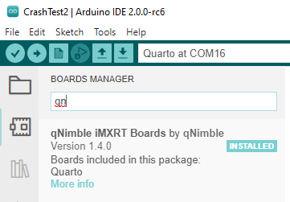
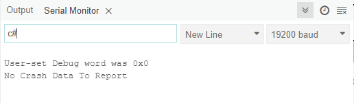
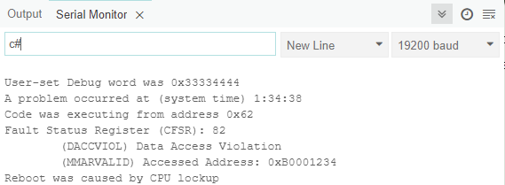

Troubleshooting Guide
Crashing
If you tell the Quarto to do something impossible, like most computers, it will go ahead and try. And fail. When this happens, the Quarto will usually crash. In most cases when this happens, the Quarto will detect the crash and reboot into the bootloader where you can further troubleshoot if desired or just upload different code. There are three main types of crashes:
Timeout Crashes
Let's say you write a function that runs forever:
void runForever(void) {
while(1) {
do_something(); //run over and over again forever
}
}
If you put that function inside the loop() function, the Quarto will happily run that program forever. USB communication will continue to work because the USB uses interrupts to temporarily pause that main loop to handle the USB tasks. Incoming ADC data also uses interrupts to pause execution of the main code.
However, if you put that function that runs forever inside an interrupt, then the interrupt will never finish and other interrupts, like the USB and ADC processing routines, will never run. USB communication will stop. While technically the Quarto hasn't crashed -- it is still running your forever loop -- it has functionally crashed because you can no longer talk to it and it cannot process new ADC data.
After about 5 seconds in this state, the Quarto will reboot itself into the boot loader. The status LED will alternate between red and blue, indicating there was a timeout crash. From this state, you can upload new code to fix the problem. Additionally, with bootloader 0.5.0 and higher, can you get more detailed information about the crash by typing "c#" into the bootloader.
Now you don't need an infinite loop to create this kind of crash. If you have an ADC interrupt firing every 1µs, then if that interrupt takes longer than 1µs to complete, then the next interrupt will want to run before the first one finishes. So the Quarto will jump directly from the running the interrupt the first time to running it the second time. And then the third time, etc and the Quarto will never run other code, so the USB will fail and we again have a timeout crash.
Example
Please make sure you are running version 1.4.0 or higher of the qNimble iMXRT boards as earlier versions did not always detect crashes and reboot, so crashes on older software may require a physical power reboot.
In the program below, we configure the ADC to fire once every 1µs, but in the interrupt routine that handles new ADC data, we put a 1000 ns delay. Now there is no way the routine can finish in under a 1µs, so the processor won't be able to keep up with the interrupts and will spend all its time handling that interrupt and ignoring everything, causing a timeout crash.
void setup() {
configureADC(1,1,0,BIPOLAR_1250mV,getADC1); // Have ADC take measurement every 1us, ±1.25V range
}
void loop(void) {
static unsigned long lastrun = 0;
if (millis() > lastrun) { //Run once every 250ms
lastrun = millis() + 250;
toggleLEDGreen();
Serial.println("+");
}
}
void getADC1(void) {
double newdata = readADC1_from_ISR(); //read ADC voltage
writeDAC(1,newdata);
delayNanoseconds(1000); //Serial.print lines are slow commands that can also cause timouet crashes
}
When the Quarto crashes, it will reboot into the bootloader (flashing blue and red) and we can enter in 'c#' to get the crash report.
Now since the Quarto didn't technically crash (it just became unresponsive), there is no crash report. However, the User-set debug word can be very helpful. The function setDebugWord can be used to set a uint32_t that will be maintained, and later read,after a reboot. So, if we want to time the crash, we can call setDebugWord in our ISR to see when it crashes. Here's the new code:
uint start_time;
void setup() {
start_time = rtc_get(); //record time when application started
configureADC(1,1,0,BIPOLAR_1250mV,getADC1); // Have ADC take measurement every 1us, ±1.25V range
}
void loop(void) {
static unsigned long lastrun = 0;
if (millis() > lastrun) { //Run once every 250ms
lastrun = millis() + 250;
toggleLEDGreen();
Serial.println("+");
}
}
void getADC1(void) {
uint time = rtc_get() - start_time;
setDebugWord(time);
double newdata = readADC1_from_ISR(); //read ADC voltage
writeDAC(1,newdata);
delayNanoseconds(1000); //Serial.print lines are slow commands that can also cause timouet crashes
}
Now, when we run 'c#' in the bootloader, the User-set Debug word is 0x05, meaning the code ran for 5 seconds before the Quarto reboot, which is the expected timeout time. Note that we use the rtc_get() command to get the time (in seconds) and not millis() because while millis() offers more timing precision, it uses interrupts to gets its time, so the measurement is not accurate during a timeout crash.
In general, you want interrupt routines such as the getADC1 to do as little as possible, so they can run quickly and complete. If you want to print out the ADC data, its better to have the getADC1 store the data and then via a timer or the main loop print out that data. Similarlly, if you want to process the ADC data, often it is better to store it in the getADC1 routine and once you have a set amount of data, process that data as a batch with a function called from the main loop or timer.
Detected Hard Crashes
The second type of crash is where the Quarto truly locks up and no longer does any processing. There are a variety of actions that can cause this, almost all involving advanced usage. The most common cause is to read or write from an invalid or protected memory address. This can happen indirectly if you have data corruption or a buffer overflow, or directly by explicitly writing to specific memory. In this example we will write to a couple of memory address and use the setDebugWord function to find out which memory write caused the problem.
Below is an example. In this code, we create a pointer that we manually set to arbitrary memory addresses to access memory. This should almost always be avoided because it enables the kinds of mistakes were are demonstrating here.
void setup() {
setDebugWord(0x11111111); //Got to start of program
uint* ptr; //create a pointer so we can write to arbitrary memory addresses
setDebugWord(0x11112222);
ptr = 0x80001234; //set memory address
*ptr = 256; //set value of that memory address to 256
setDebugWord(0x33334444);
ptr = 0xb0001234; //set memory address
*ptr = 256; //set value of new memory address to 256
setDebugWord(0x66667777);
ptr = 0x20001234; //set memory address
*ptr = 256; //set value of another memory address to 256
}
Now when the Quarto crashes and reboots, the bootloader will flash red and green show a hard crash instead of a timeout. With bootloader version 0.5.0 and higher, we also get a crash report from the 'c#' command:
From this output, we can see a few things. The Debug word was 0x33334444 so the crash occured when writing to that second memory address 0xb0001234 . The crash report confirms this, explicity showing that the accessed memory violation was at 0xB0001234. For advanced users, the fact that the crash happened when executing code at address 0x62 could also be used for debugging the problem.
Undetected Hard Crashes
Ideally, any crash of the Quarto would be detected and the device will reboot into the bootloader. However, it is possible to disabled the reboot functionality or otherwise stop this process from working. In this case, you may get a pop-up message from the operating system that it is no longer able to communicate with serial port the Quarto is set to. When this happens, the only solution is to reboot the Quarto. This can be done in two ways:
- Disconnect and reconnect power to the device
- Press and a hold the front-panel button (left side of the Quarto) for ~5 seconds. The blue power LED should turn off. Then release the button and press the button again for ~2 seconds the blue LED should turn back on and the device will boot up1.
When the unit reboots, it will go into the bootloader and the status LED will flash white for ~3 seconds. After this period, the Quarto will try to load the application code. If you do not want this to happen (as this was the application code that crashed the Quarto), press the front-panel button once while the Quarto is in the bootloader (it is flashing the status LED white) and the Quarto will stay indefinitely in the bootloader. When the button is pressed, the status LED will change to flashing red instead of white. You can now load a different application code (The crash report will not survive the power cycle).
This is happens, please contact us via the forum or our contact us link so we can try to improve the Quarto's ability to reboot after a crash. If you can send us your code, that will make troubleshooting the issue much easier.
Fixing a Timeout Crash
Here's an example for code that will cause a timeout crash the Quarto:
void setup(void) {
configureADC(1,1,0,BIPOLAR_1250mV,getADC1); // Have ADC take measurement every 1us, ±1.25V range
}
void getADC1(void) {
double newdata = readADC1_from_ISR(); //read ADC voltage
writeDAC(1,newdata);
Serial.println(newdata);
}
The Serial.println() function is a relatively slow function as it converts raw data to ASCII and has to send that down over USB. It isn't fast enough to complete in under a 1μs. The solution to keep slow functions like Serial.print() out of high priority interrupts. One approach is to move the printing of the ADC data to the main loop:
volatile double adcdata;
void setup(void) {
configureADC(1,1,0,BIPOLAR_1250mV,getADC1); // Have ADC take measurement every 1us, ±1.25V range
}
void getADC1(void) {
adcdata = readADC1_from_ISR(); //read ADC voltage
writeDAC(1,adcdata);
}
void loop() {
static unsigned long lastrun = 0;
if (millis() > lastrun) { //Run once every 1000ms
lastrun = millis() + 1000;
toggleLEDGreen();
Serial.println(adcdata);
}
}
In the above example, the main loop is responsible for running the Serial.print() function, so it can get preempted by the ADC interrupt when necessary. While this example only prints the ADC data once per second, that isn't what is preventing the crash. If the loop were simply:
void loop() {
Serial.println(adcdata);
}
the Quarto would not crash as the the USB (and ADC) interrupts can preempt the loop function, so no matter how long loop() takes to run, the Quarto can respond to USB and ADC data.
If you want to have more controlled timing than a simple loop can provide, we can use a timer. By default the timer runs with a low priority so it too will get interrupted by the ADC or the USB, and this will prevent the Quarto from crashing.
volatile double adcdata;
IntervalTimer printTimer;
void setup(void) {
configureADC(1,1,0,BIPOLAR_1250mV,getADC1); // Have ADC take measurement every 1us, ±1.25V range
printTimer.begin(printData, 100); // run debug() every 100 microseconds
}
void getADC1(void) {
adcdata = readADC1_from_ISR(); //read ADC voltage
writeDAC1(adcdata);
}
void loop() {
static unsigned long lastrun = 0;
if (millis() > lastrun) { //Run once every 1000ms
toggleLEDGreen();
lastrun = millis() + 1000;
}
}
void printData() {
Serial.println(adcdata);
}